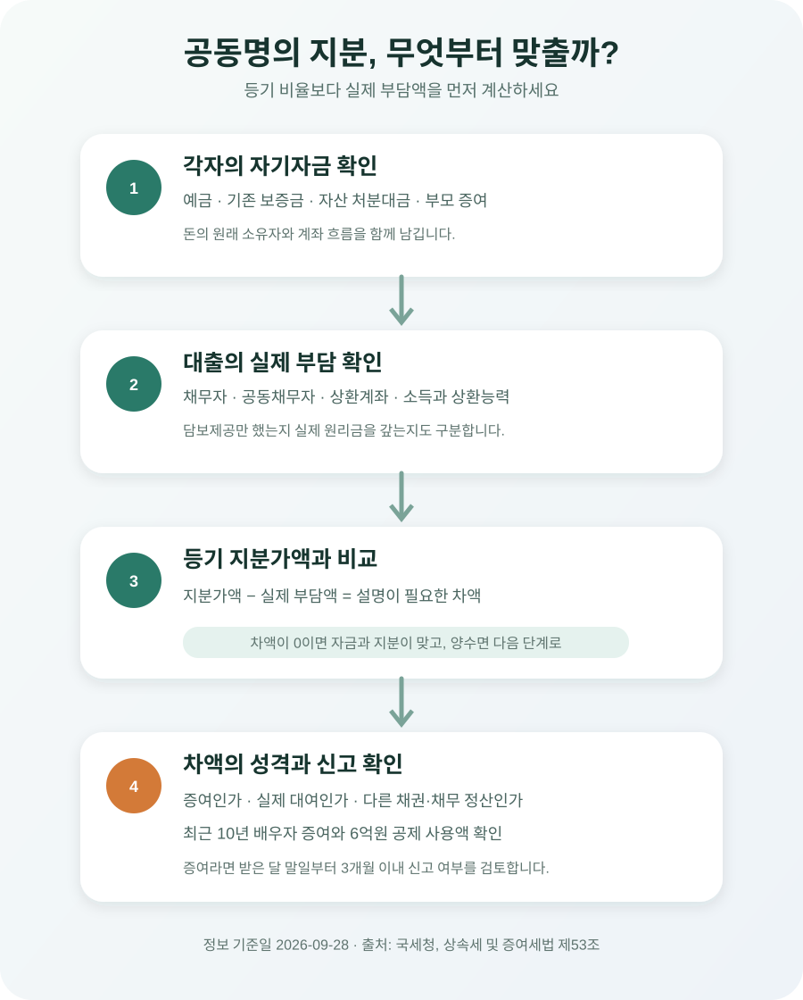

부부가 돈을 다르게 냈는데 아파트 지분을 50:50으로 하면 증여세가 생길까?
한 사람이 집값을 더 많이 부담하면서 부부 지분을 똑같이 나누면, 상대방이 자기 돈보다 더 취득한 지분은 증여로 판단될 수 있습니다. 배우자에게 받은 증여는 최근 10년간 6억원까지 공제되므로 당장 낼 세금이 없을 수도 있지만, ‘증여가 아닌 것’과 ‘공제 후 세액이 0원인 것’은 다릅니다. 계약 전에 각자의 현금·대출 부담과 등기 지분을 한 표에서 맞추고, 송금과 상환 자료를 남겨야 합니다.
부부 공동명의라고 집값도 자동으로 절반씩 낸 것이 되지는 않습니다
12억원 아파트를 사면서 남편 통장에서 8억원, 아내 통장에서 4억원을 냈다고 해보겠습니다. 등기를 50:50으로 하면 두 사람은 각각 6억원어치 지분을 취득합니다. 아내는 자기 부담액보다 2억원 많은 지분을 얻고, 남편은 반대로 자기가 낸 돈보다 2억원 적은 지분을 갖게 됩니다. 이 2억원이 남편에게서 아내로 넘어간 경제적 이익으로 판단될 수 있습니다.
“결혼하면 재산이 모두 공동재산 아닌가?”라는 질문이 뒤따릅니다. 민법상 부부재산 관계와 증여세 판단은 같은 말이 아닙니다. 부부가 생활비를 함께 쓰더라도 주택 취득자금의 출처, 등기 지분, 대출 채무와 실제 상환 주체는 따로 확인합니다. 국세법령정보시스템에 공개된 질의회신도 아내가 금융기관에서 빌린 돈으로 부동산을 사고 부부 공동명의로 등기한 사안에서 남편 지분 상당액에 증여세가 과세된다고 답했습니다.
세법의 증여는 이름보다 실질을 봅니다. 국세청은 직접 또는 간접적인 방법으로 타인에게 재산이나 경제적 이익을 무상으로 이전하면 증여에 해당한다고 설명합니다. 따라서 매매계약서에 두 사람 이름이 같이 적혀 있다는 사실만으로 실제 자금 부담의 차이가 사라지지는 않습니다.
12억원 아파트라면 지분과 실제 부담액을 이렇게 맞춰 봅니다
취득세·중개보수 같은 부대비용을 빼고 매매대금만 단순 비교하겠습니다. 남편이 8억원, 아내가 4억원을 실제 부담한다면 자금 비율은 약 66.7%와 33.3%입니다. 등기 지분도 그 비율로 정하면 각자가 낸 돈과 취득한 지분이 대체로 맞습니다.
| 정한 지분 | 남편이 취득한 지분가액 | 아내가 취득한 지분가액 | 자금과 지분 차이 |
|---|---|---|---|
| 남편 2/3 · 아내 1/3 | 8억원 | 4억원 | 차이 없음 |
| 남편 50% · 아내 50% | 6억원 | 6억원 | 아내가 부담액보다 2억원 더 취득 |
| 남편 단독명의 | 12억원 | 0원 | 아내가 낸 4억원의 성격을 별도로 설명해야 함 |
마지막 단독명의 사례도 안전하다고 단정할 수 없습니다. 아내 돈 4억원이 남편 지분 취득에 들어갔다면 그 돈이 증여인지, 실제 상환할 대여인지, 부부 사이 다른 채권·채무 정산인지 자료가 필요합니다. 공동명의만 피하면 자금출처 문제도 사라진다고 생각하면 안 됩니다.
계산식은 어렵지 않습니다. 내 등기 지분가액에서 내가 실제로 부담한 금액을 뺀 값이 양수라면 그 차액의 성격을 먼저 확인합니다. 다만 기존 전세보증금, 부모에게 받은 증여금, 처분한 자산, 공동대출이 섞이면 단순한 통장 출금액만으로 결론을 내릴 수 없습니다.
주택담보대출은 명의보다 누가 채무를 지고 갚는지가 중요합니다
집값 가운데 5억원을 주택담보대출로 조달한다면 “대출을 누구 몫으로 볼 것인가”가 가장 어려운 질문입니다. 한 사람 이름으로 대출이 실행됐다고 해서 무조건 그 사람만의 자금이라고 단정할 수도, 집이 공동담보라고 해서 자동으로 절반씩 부담한 것으로 볼 수도 없습니다.
확인할 것은 대출계약서의 채무자·공동채무자, 부부가 약정한 내부 부담, 원리금이 실제로 빠져나가는 계좌, 각자의 소득과 상환 능력입니다. 국세법령정보시스템의 다른 회신은 대출 이자와 원금 상환의무 등에 따라 명의상·사실상의 채무자가 타인이라면 그 채무액을 증여재산가액에서 공제할 수 없다고 설명합니다. 담보제공자와 채무자는 같은 개념이 아닙니다.
예를 들어 남편이 단독 채무자이고 남편 급여계좌에서 원리금을 계속 갚는데, 아내 지분을 계산할 때 대출의 절반을 아내 자금으로 넣으면 설명이 어긋날 수 있습니다. 반대로 두 사람이 공동채무를 지고 각자 소득으로 약정 비율만큼 상환한다면 계약서와 계좌 흐름을 함께 제시할 수 있습니다.
잔금일의 대출 실행만 보고 끝내지 마세요. 공동명의 지분은 그대로인데 이후 한 사람이 상대방 몫의 원금을 계속 대신 갚으면 그 상환액도 배우자에게 넘긴 경제적 이익인지 다시 검토해야 합니다. 대출 기간이 길수록 처음 정한 부담 비율과 실제 상환이 달라지기 쉽습니다.

배우자 6억원 공제는 ‘증여가 아니게 만드는 한도’가 아닙니다
상속세 및 증여세법 제53조는 거주자가 배우자에게 증여받으면 6억원을 증여세 과세가액에서 공제하도록 합니다. 다만 이번 증여에서 공제받을 금액과 증여 전 10년 안에 공제받은 금액을 합쳐 6억원을 넘길 수 없습니다. 혼인신고를 하지 않은 사실혼 배우자는 이 공제 대상 배우자에 포함되지 않는다고 국세청은 안내합니다.
앞의 2억원 차액만 있고 최근 10년 안에 남편에게 받은 다른 증여가 없다면, 6억원 공제 범위 안이라 과세표준과 납부세액이 0원이 될 수 있습니다. 그렇다고 2억원의 자금 이전 자체가 없었던 것으로 바뀌는 것은 아닙니다. 나중에 다시 현금이나 지분을 받으면 앞선 공제 사용액과 합쳐 계산해야 합니다.
| 아내가 더 취득한 지분가액 | 최근 10년 남편에게 받은 다른 증여 | 남은 배우자 공제 | 단순 결과 |
|---|---|---|---|
| 2억원 | 없음 | 6억원 | 공제 후 과세표준 0원 가능 |
| 2억원 | 과거 공제 사용 5억원 | 1억원 | 1억원이 과세표준 계산에 남을 수 있음 |
| 7억원 | 없음 | 6억원 | 1억원이 과세표준 계산에 남을 수 있음 |
표는 다른 가산액·공제·평가 문제를 제외한 구조 설명입니다. 배우자 공제를 쓸 거래라면 증여 시점과 가액, 과거 10년 신고 내역을 함께 확인하세요. 증여세 신고기한은 일반적으로 증여받은 날이 속하는 달의 말일부터 3개월 이내이며, 신고서에는 증여재산 및 평가명세서와 채무사실 등 입증자료가 포함됩니다.
신혼부부 1억원 추가공제는 배우자끼리 주는 돈에 더하는 제도가 아닙니다
혼인·출산 증여재산공제를 배우자 6억원 공제에 더해 “부부끼리 7억원까지”로 이해하면 안 됩니다. 이 추가공제는 부모·조부모 같은 직계존속이 성년 자녀에게 혼인신고일 전후 2년 등 법정 기간 안에 증여할 때 적용하는 제도입니다. 배우자가 배우자에게 주는 돈에는 제53조의 배우자 6억원 공제를 따집니다.
혼인 추가공제는 2024년 1월 1일 이후 증여분부터 시행됐습니다. 부모에게 집값을 받은 글에서 설명한 일반공제 5천만원과 혼인·출산 추가공제 1억원은 부모 쪽 자금의 문제이고, 그 돈으로 부부 공동명의 주택을 살 때는 다시 누가 받은 돈인지와 누구 지분을 취득했는지를 연결해야 합니다.
예를 들어 아내 부모가 혼인공제를 적용해 아내에게 1억 5천만원을 주었다면 그 돈은 아내의 취득자금으로 설명하는 것이 자연스럽습니다. 그 돈까지 남편 지분 취득에 쓰면 부부 사이의 별도 자금 이전이 생길 수 있습니다. 부모 증여와 배우자 사이의 자금 이동을 한 번에 뭉뚱그리지 마세요.
계약 전에 각자의 자금표와 계좌 흐름을 먼저 맞추세요
가장 쉬운 준비는 매매대금과 부대비용을 한 줄씩 적고, 남편과 아내가 실제로 낼 금액을 나누는 것입니다. 본인 예금, 기존 전세보증금, 주식 매도대금, 부모 증여, 금융기관 대출을 항목별로 적습니다. 각자 합계가 예정 지분가액과 맞는지 확인한 뒤 지분을 정합니다.
- 자기자금 — 잔고증명서, 예금 해지내역, 자산 처분 계약서와 입금내역을 보관합니다.
- 부모에게 받은 돈 — 누구의 부모가 누구에게 준 돈인지, 증여인지 대여인지 구분하고 신고서·차용자료와 연결합니다.
- 대출 — 채무자와 공동채무자, 담보제공자, 원리금 상환계좌와 실제 부담비율을 구분합니다.
- 계약금·중도금·잔금 — 가능하면 각자 부담액이 보이도록 계좌로 보내고 이체확인증을 보관합니다.
- 자금조달계획서 — 공동명의라면 각 매수인의 조달액이 지분 취득가액과 연결되는지 대조합니다.
부부 한 사람 계좌로 돈을 모아 매도인에게 보낼 수도 있습니다. 이 경우 중간 계좌만 보고 누가 부담했는지 오해하지 않도록 돈이 들어온 날짜, 원래 소유자, 잔금 지급일을 연결한 이체내역을 남기세요. ‘부부 공용계좌’라는 별칭만으로 자금의 원천이 설명되지는 않습니다.
이미 50:50으로 등기했다면 지분부터 급히 되돌리지 마세요
자금과 지분이 다르다는 사실을 뒤늦게 알았다고 바로 지분이전등기를 하면 새로운 세금과 비용이 생길 수 있습니다. 부동산 지분을 배우자에게 넘기는 행위 자체가 다시 증여 또는 양도로 검토될 수 있고, 취득세·등기비용과 향후 양도소득세 취득가액에도 영향을 줄 수 있습니다.
먼저 매매계약일과 잔금일, 등기 지분, 각 계좌의 지급액, 대출계약과 실제 상환내역, 최근 10년 배우자 간 증여를 정리하세요. 그 자료로 당초에 증여가 있었는지, 있었다면 가액과 신고기한이 무엇인지 세무서 또는 세무전문가에게 확인하는 순서가 안전합니다.
“6억원 이하니까 아무 기록도 필요 없다”거나 “부부끼리 빌린 것으로 적으면 된다”는 식으로 사후 문서를 만들면 오히려 전체 자금 흐름과 맞지 않을 수 있습니다. 대여를 주장하려면 처음부터 상환의무와 능력, 실제 상환이 있어야 한다는 점도 부모·자녀 간 차용과 같습니다.
잔금 전에 이 여덟 가지를 확인하세요
- □ 매매대금과 부대비용을 남편·아내 부담액으로 나눴다.
- □ 각자의 등기 지분가액이 실제 현금과 채무 부담의 합계와 맞는지 계산했다.
- □ 대출의 명의자, 실제 채무자, 담보제공자와 상환계좌를 구분했다.
- □ 부모에게 받은 돈은 받은 배우자와 증여·대여 성격을 정확히 적었다.
- □ 최근 10년 배우자에게 받은 현금·주식·부동산과 공제 사용액을 확인했다.
- □ 혼인 1억원 추가공제는 배우자 간 공제가 아니라 직계존속 증여 공제임을 확인했다.
- □ 계약서·자금조달계획서·등기의 매수인과 지분이 서로 일치한다.
- □ 계약금·중도금·잔금과 이후 원리금 상환을 계좌 자료로 설명할 수 있다.
공식 자료 및 참고자료
- 국세청 — 증여세 개요 (증여의 범위와 납세의무자)
- 국세청 — 기본세율 적용 증여 항목별 설명 (배우자 6억원·10년 합산·세율)
- 국세청 — 증여세 신고납부기한
- 국가법령정보센터 — 상속세 및 증여세법 제53조 (증여재산공제)
- 국가법령정보센터 — 상속세 및 증여세법 제53조의2 (혼인·출산 증여재산공제)
- 국가법령정보센터 — 상속세 및 증여세법 제45조 (재산 취득자금 등의 증여 추정)
- 국세법령정보시스템 — 부부 공동명의 부동산 취득자금 질의회신
- 국세법령정보시스템 — 대출의 명의상·사실상 채무자 질의회신
정보 기준일: 2026-09-28. 이 글은 국내 거주 법률상 부부가 일반 매매로 주택을 취득하는 상황을 단순화한 정보이며 개별 세무 자문이 아닙니다. 분양권, 재개발 입주권, 사업소득 공동재산, 명의신탁 주장, 비거주자, 부담부증여, 혼인 전 취득, 기존 채권·채무 정산이 얽히면 결론이 달라질 수 있습니다. 큰 금액의 지분을 정하거나 이미 등기한 지분을 바꾸기 전에는 관할 세무서·국세상담센터 126 또는 세무전문가에게 자료를 제시해 확인하세요.
공동명의 자금을 정할 때 같이 쓸 도구
- 부동산 총비용 대시보드매매대금 밖의 취득세·중개보수까지 포함한 필요자금 확인
- 취득세 계산기지분 취득 전에 전체 취득비용을 미리 계산